Feed post (4)
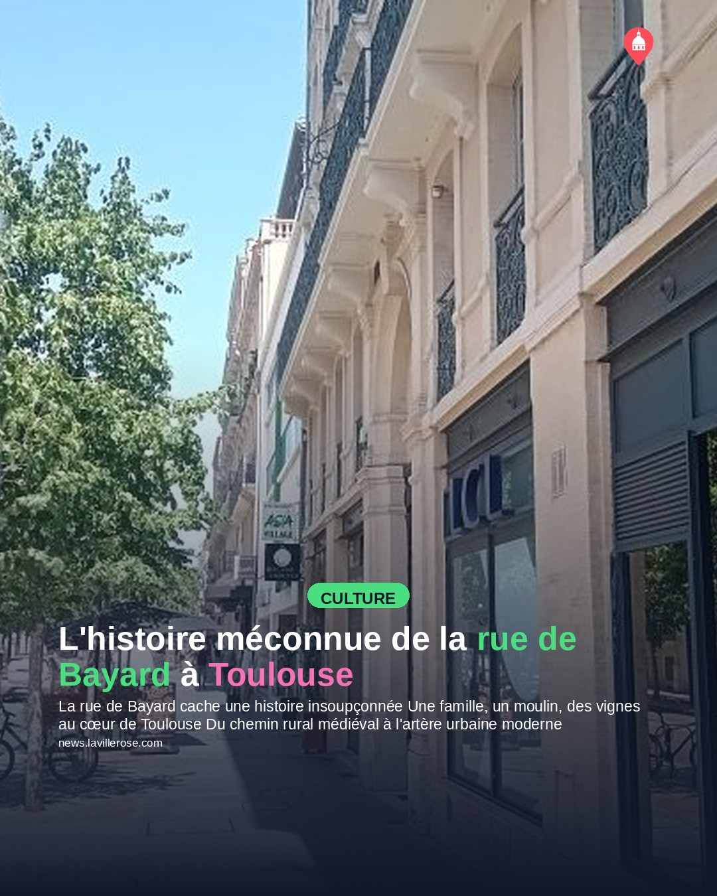
L'histoire méconnue de la rue de Bayard à Toulouse
Texte sur l'image
La rue de Bayard cache une histoire insoupçonnée
Une famille, un moulin, des vignes au cœur de Toulouse
Du chemin rural médiéval à l'artère urbaine moderne
Légende publiée
On passe tous les jours rue de Bayard sans se demander d'où vient ce nom — et la réponse est surprenante. Ce n'est pas le chevalier sans peur et sans reproche, mais bien une famille toulousaine, les Bayard, propriétaires d'une grande métairie avec vignes, jardin et même un moulin sur le canal du Midi au XVIIe siècle. L'artère est l'une des plus anciennes du secteur, antérieure au XVIe siècle, avant d'être urbanisée sous la houlette de l'architecte Urbain Vitry après la destruction des remparts dans les années 1820. Un beau plongeon dans la petite histoire du quartier Matabiau, à lire sur lessentiel.fr.
Modifier sur GitHub →
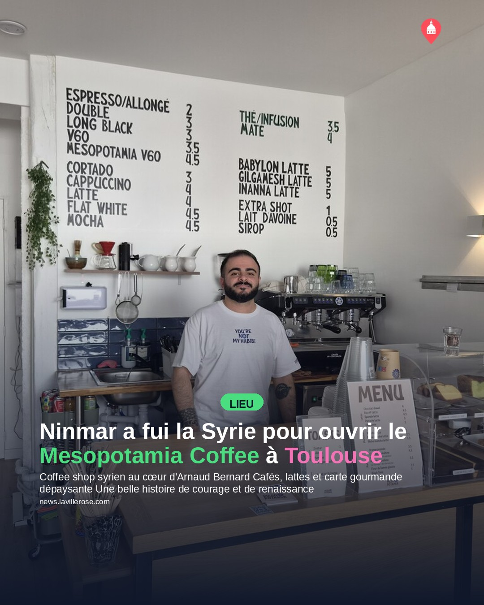
Ninmar a fui la Syrie pour ouvrir le Mesopotamia Coffee à Toulouse
Texte sur l'image
Coffee shop syrien au cœur d'Arnaud Bernard
Cafés, lattes et carte gourmande dépaysante
Une belle histoire de courage et de renaissance
Légende publiée
Au 6 rue des Trois Piliers, dans le quartier animé d'Arnaud Bernard, le Mesopotamia Coffee a ouvert ses portes il y a quelques semaines. Derrière le comptoir, Ninmar — arrivé de Syrie en 2014 à 18 ans pour fuir la guerre — a mis tout son cœur dans une carte café soignée et une ambiance vraiment chaleureuse. Les habitués sont déjà nombreux, et on comprend pourquoi : l'accueil est au rendez-vous, les boissons aussi. Une adresse à découvrir si vous passez dans le coin, et une belle histoire à lire en suivant le lien en bio.
Modifier sur GitHub →
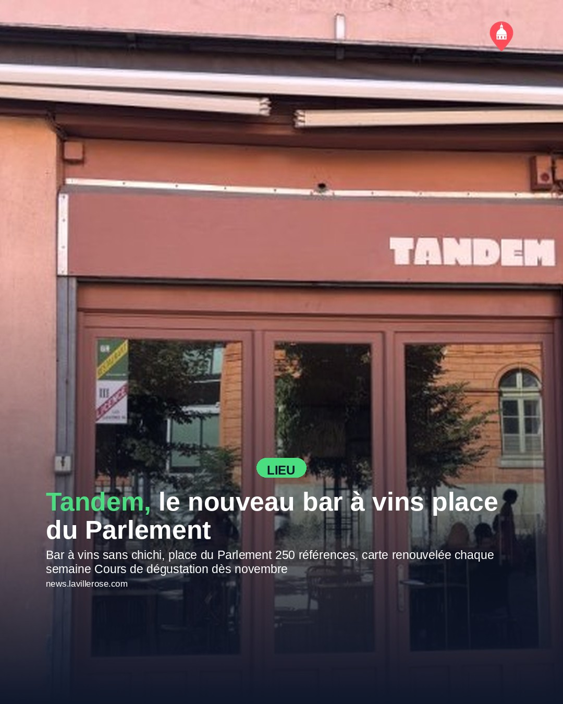
Tandem, le nouveau bar à vins place du Parlement
Texte sur l'image
Bar à vins sans chichi, place du Parlement
250 références, carte renouvelée chaque semaine
Cours de dégustation dès novembre
Légende publiée
Tandem vient d'ouvrir ses portes au cœur du Vieux-Toulouse, place du Parlement, avec une promesse simple : rendre le vin accessible et joyeux, sans intimidation. Derrière le comptoir, Charlie Noraz et Enzo Lasserre, ex-cavistes de Chai Vincent, proposent une sélection de près de 250 références renouvelée chaque semaine — des Meursault à 200 € côtoient un Limoux bio à 21 €. Pas de cuisine sur place, juste du vin (et quelques bières artisanales locales signées Hectare et Weitam) dans une ambiance décontractée, du mardi au samedi de 17h à 2h. Dès novembre, des cours de dégustation et des soirées vigneronnes seront organisés sur place pour aller encore plus loin.
Modifier sur GitHub →
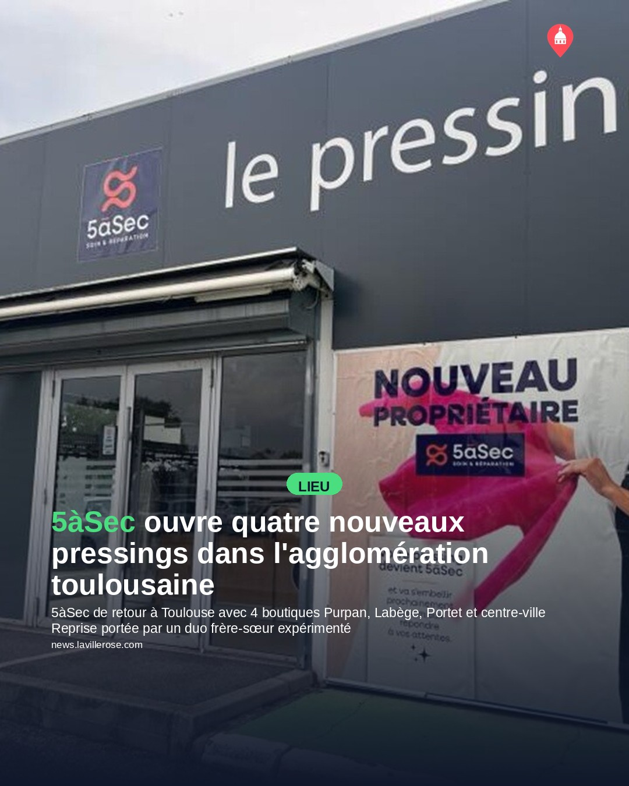
5àSec ouvre quatre nouveaux pressings dans l'agglomération toulousaine
Texte sur l'image
5àSec de retour à Toulouse avec 4 boutiques
Purpan, Labège, Portet et centre-ville
Reprise portée par un duo frère-sœur expérimenté
Légende publiée
C'est un retour remarqué dans la Ville rose : la franchise 5àSec vient d'ouvrir pas moins de quatre nouveaux pressings dans l'agglomération toulousaine, à Purpan, Labège, Portet-sur-Garonne et en centre-ville. Derrière ce projet ambitieux, un frère et une sœur qui cumulent déjà une dizaine d'années d'expérience dans le secteur et possédaient trois pressings en banlieue toulousaine. C'est la disparition de la franchise Bel & Blanc — placée en redressement judiciaire après le décès de son dirigeant — qui a ouvert la porte à cette reconquête en partenariat avec 5àSec. Pour les Toulousains, cela signifie un accès élargi à ce service dans plusieurs quartiers et communes de l'agglo.
Modifier sur GitHub →
Story (7)
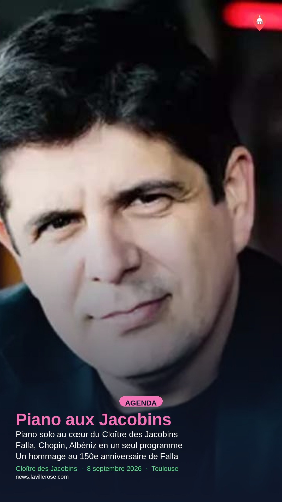
Javier Perianes au Piano aux Jacobins pour célébrer Manuel de Falla
Modifier sur GitHub →

Les Faux British : comédie catastrophe au Café Théâtre Les 3T
Modifier sur GitHub →
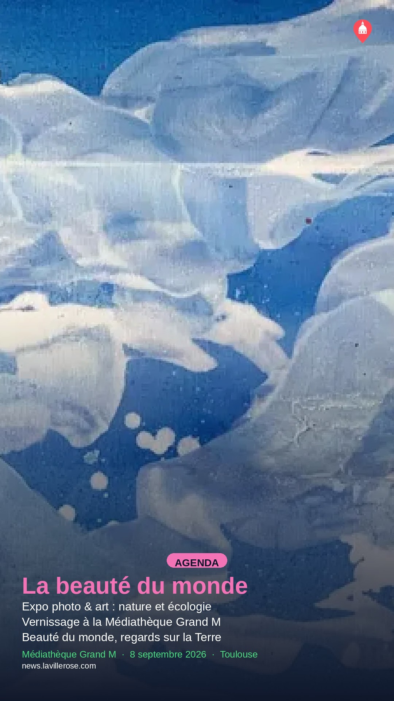
Exposition Marika Perros à la Médiathèque Grand M
Modifier sur GitHub →
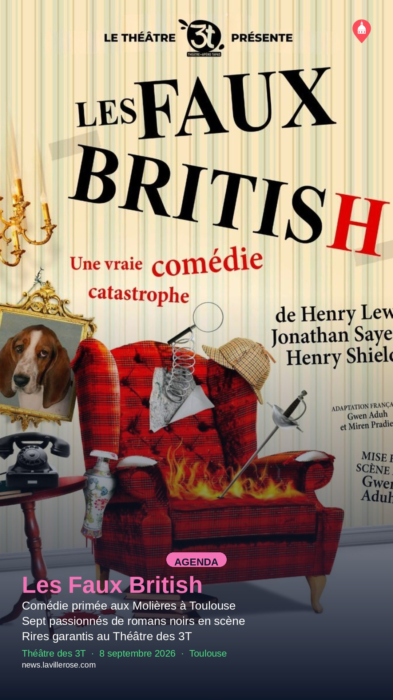
Les Faux British au Théâtre des 3T
Modifier sur GitHub →
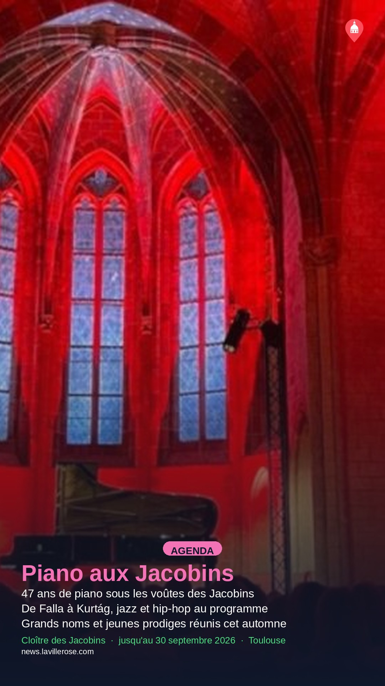
Festival Piano aux Jacobins : 47e édition au cloître toulousain
Modifier sur GitHub →
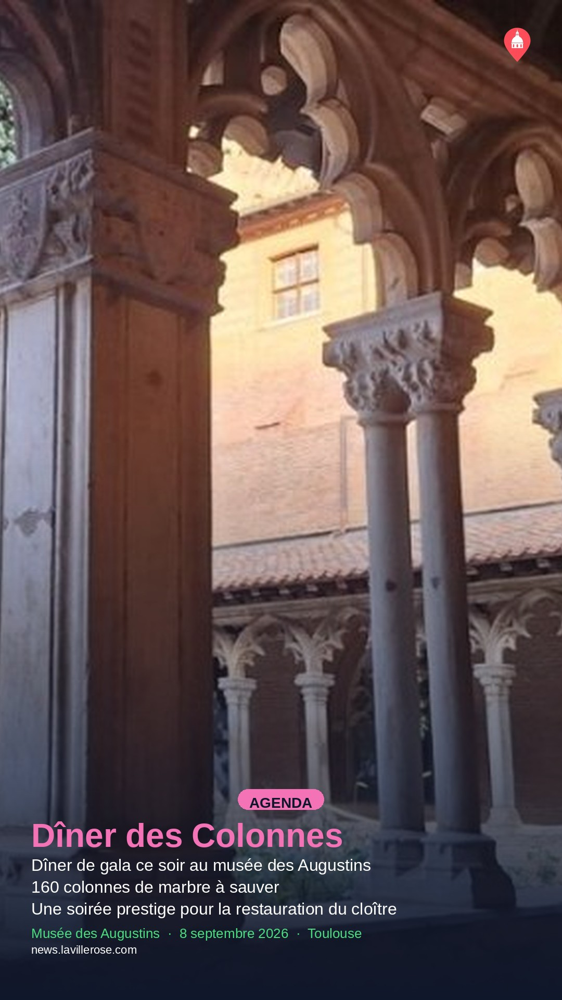
Le Dîner des Colonnes au musée des Augustins pour la restauration
Modifier sur GitHub →
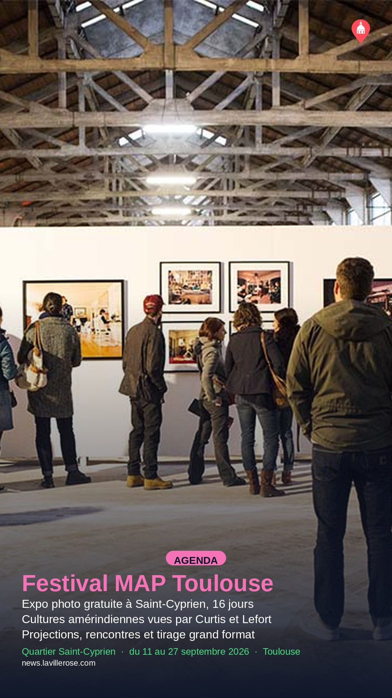
Festival de photo MAP Toulouse dans le quartier Saint-Cyprien
Modifier sur GitHub →
À venir (45)
Événements déjà en base qui redeviendront éligibles à une Story sur une date future,
d'après leur planning actuel. Projection, pas une garantie : elle suppose qu'aucun
nouvel article n'arrive et que rien d'autre n'est publié entre-temps.
2026-09-09
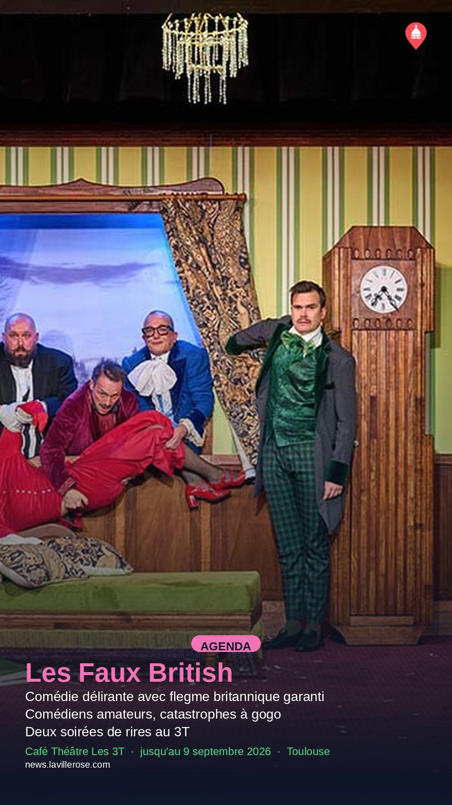
Les Faux British : comédie catastrophe au Café Théâtre Les 3T
jusqu'au 9 septembre 2026

Magdalene Ho en récital de piano au Cloître des Jacobins
9 septembre 2026
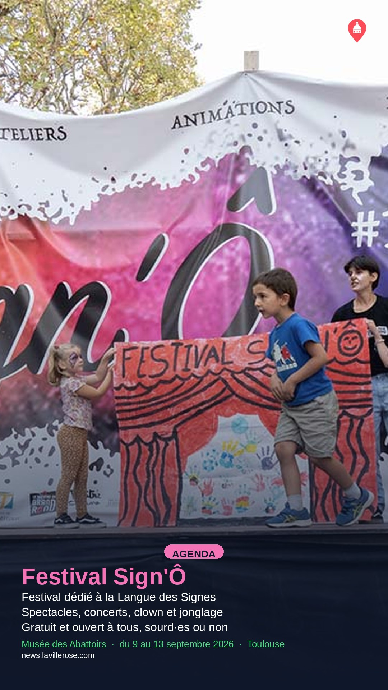
Festival Sign'Ô : la création en Langue des Signes à Toulouse
du 9 au 13 septembre 2026

Préambule du Festival de rue de Ramonville place Bagatelle
9 septembre 2026
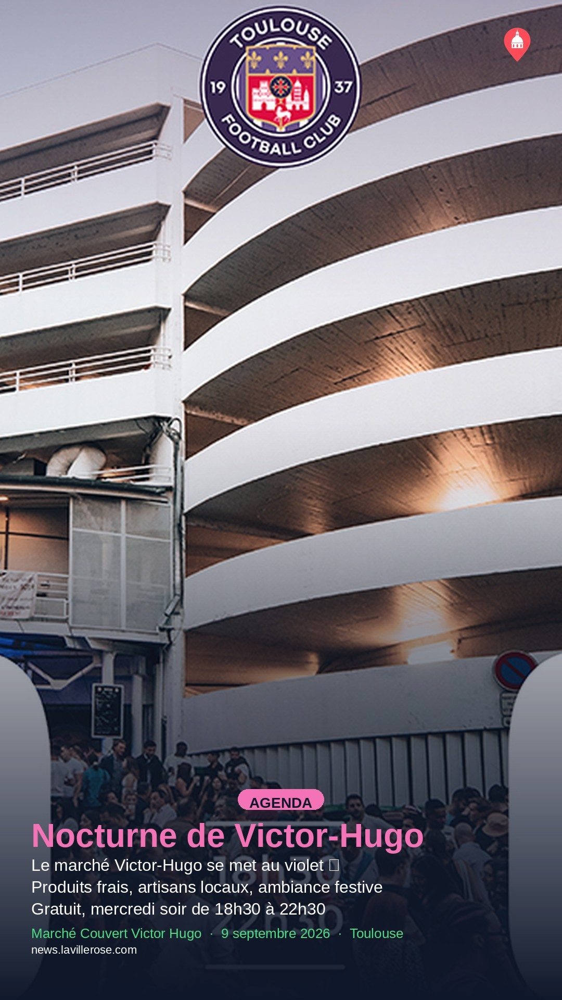
Nocturne du Marché Victor-Hugo aux couleurs du Toulouse FC
9 septembre 2026

Préambule du Festival de Rue de Ramonville place Bagatelle
9 septembre 2026
2026-09-10
Festival Sign'Ô : la création en Langue des Signes à Toulouse
du 9 au 13 septembre 2026
Ilyun Bürkev en récital au Cloître des Jacobins pour Piano aux Jacobins
10 septembre 2026
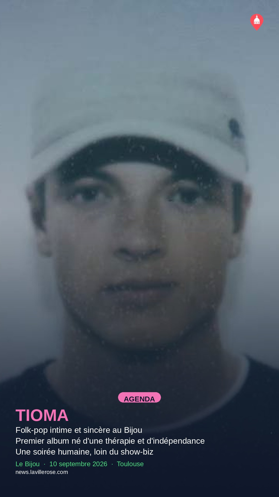
Tioma en concert au Bijou le 10 septembre
10 septembre 2026

Spectacle théâtral sur l'amour et les liens humains au Pont Neuf
du 10 au 12 septembre 2026

« 10 ans après » : une comédie pétillante à la Comédie de la Roseraie
10 septembre 2026

Echo Jazz : un quartet accordé à 432Hz au Taquin
10 septembre 2026
2026-09-11
Festival Sign'Ô : la création en Langue des Signes à Toulouse
du 9 au 13 septembre 2026
Spectacle théâtral sur l'amour et les liens humains au Pont Neuf
du 10 au 12 septembre 2026

Comédie « Les Clotildes » au Café Théâtre Les 3T
11 septembre 2026

Vadim Kholodenko au Cloître des Jacobins : Beethoven et Liszt
11 septembre 2026

Syrano fête 20 ans de carrière au Bijou avec Danielito de Tryo
11 septembre 2026

Spectacle féministe bilingue au Théâtre Sorano en septembre
11 septembre 2026

CHELABÔM en concert au Taquin le 11 septembre
11 septembre 2026
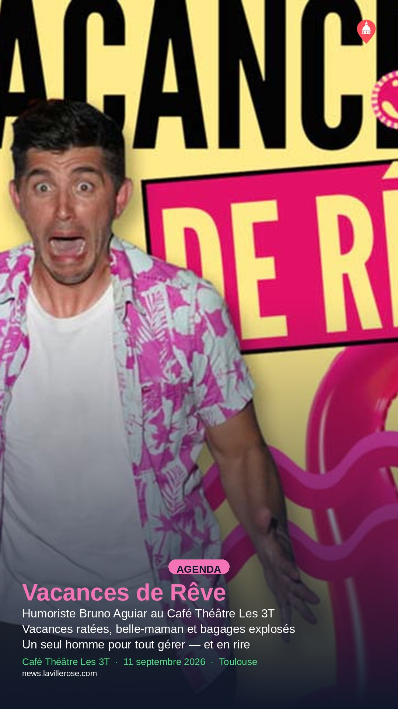
Bruno Aguiar en spectacle : « Vacances de Rêve » au Café Théâtre Les 3T
11 septembre 2026

Fifigrot : le festival du film grolandais de retour en septembre
du 14 au 20 septembre 2026
2026-09-12
Festival Sign'Ô : la création en Langue des Signes à Toulouse
du 9 au 13 septembre 2026
Spectacle théâtral sur l'amour et les liens humains au Pont Neuf
du 10 au 12 septembre 2026
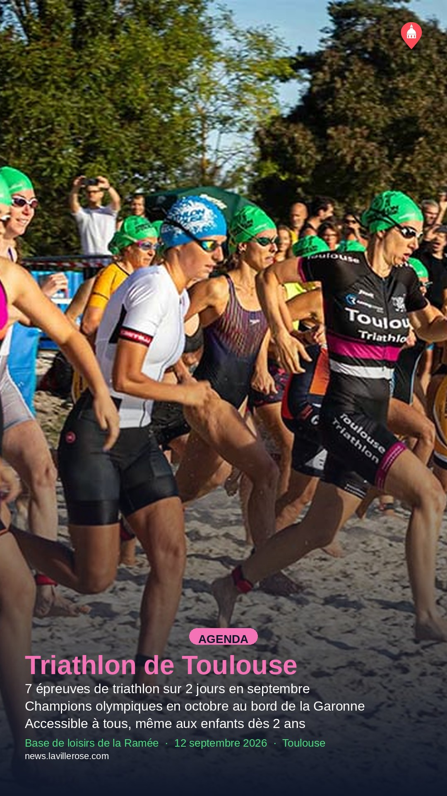
Deux événements de triathlon à Toulouse en septembre et octobre
12 septembre 2026

Visite guidée : l'art du vitrail à travers Toulouse
12 septembre 2026

Parcours insolite : des ornements Virebent à la Maison Giscard
12 septembre 2026

Mon Petit Chaperon : spectacle jeunesse à la Comédie de la Roseraie
du 12 au 13 septembre 2026
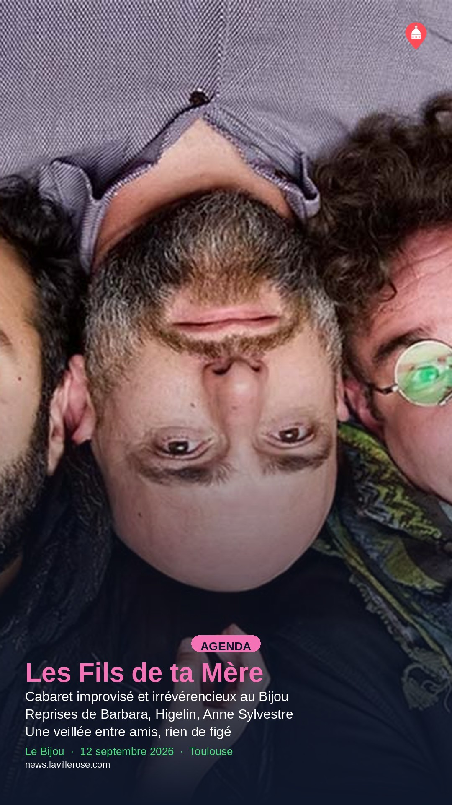
Les Fils de ta Mère en cabaret improvisé au Bijou
12 septembre 2026

Les Mélodies du Canal aux Cales de Radoub : concerts solidaires sur l'eau
du 12 au 13 septembre 2026

Deli Zirzop en concert au Taquin le 12 septembre
12 septembre 2026
Fifigrot : le festival du film grolandais de retour en septembre
du 14 au 20 septembre 2026
2026-09-13
Festival Sign'Ô : la création en Langue des Signes à Toulouse
du 9 au 13 septembre 2026
Mon Petit Chaperon : spectacle jeunesse à la Comédie de la Roseraie
du 12 au 13 septembre 2026
Les Mélodies du Canal aux Cales de Radoub : concerts solidaires sur l'eau
du 12 au 13 septembre 2026

Visite inclusive et sensorielle de Toulouse pour tous les publics
13 septembre 2026
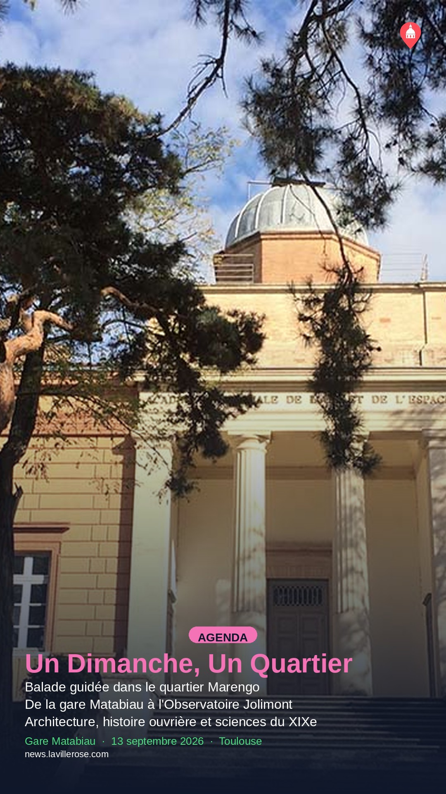
Visite guidée du quartier Marengo, laboratoire urbain du XIXe siècle
13 septembre 2026

Hommage à Weber sur instruments historiques à la Chapelle des Carmélites
13 septembre 2026

Canoë avec une kayakiste olympique puis brunch sur une péniche
13 septembre 2026
Fifigrot : le festival du film grolandais de retour en septembre
du 14 au 20 septembre 2026
2026-09-14
Fifigrot : le festival du film grolandais de retour en septembre
du 14 au 20 septembre 2026

Cartoon Forum 2026 : 66 séries d'animation européennes à Toulouse
du 14 au 17 septembre 2026

Paul Lay en concert au Cloître des Jacobins
14 septembre 2026

La Quinzaine Littéraire : rencontres gratuites dans les bibliothèques toulousaines
du 17 septembre au 4 octobre 2026
2026-09-15
Cartoon Forum 2026 : 66 séries d'animation européennes à Toulouse
du 14 au 17 septembre 2026

Pierre Laurent Aimard interprète Bach et Kurtág au Cloître des Jacobins
15 septembre 2026